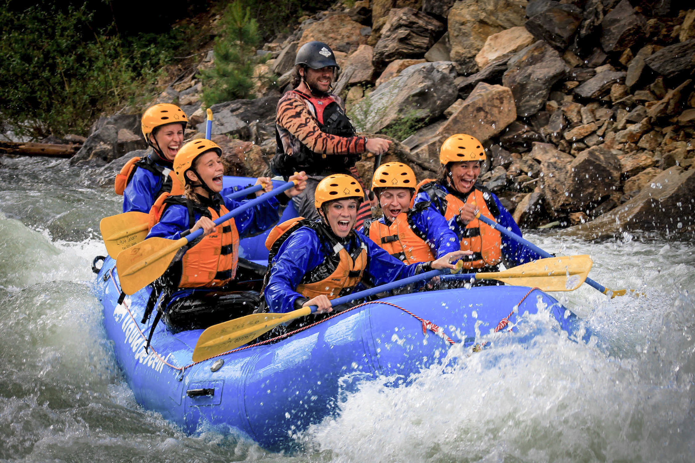

Our mission is to provide safe, exhilarating, and unforgettable river experiences for adventurers of all levels. We believe the river changes people.


Our mission is to provide safe, exhilarating, and unforgettable river experiences for adventurers of all levels. We believe the river changes people.
Nestled along the legendary banks of the Nile River in Jinja, Uganda, Splash White Water Rafting Co. was founded in 1995 with a single raft and an audacious dream. Today, we proudly navigate over 500 miles of world-class whitewater every season, transforming that initial spark of adventure into an empire of excitement.
Our journey has been marked by relentless dedication to safety, unparalleled expertise, and an unwavering passion for the river. We've grown from a small local operation into one of East Africa's most trusted rafting companies, yet our core values remain unchanged: every paddler deserves the thrill of a lifetime.
What sets us apart? Our team of certified guides brings decades of combined experience, having conquered the Nile's most formidable rapids countless times. We combine cutting-edge safety protocols with intimate knowledge of the river's moods and mysteries. When you raft with us, you're not just a customer – you're part of our extended river family.
Get ready for the ultimate white water experience! Whether you're a first-time rafter or a seasoned pro, our expert guides will take you through the most thrilling rapids the Nile has to offer. From the legendary "Bad Place" to the powerful Itanda Falls, prepare for an adrenaline-pumping adventure you'll never forget.